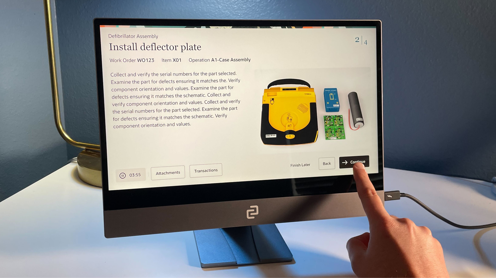
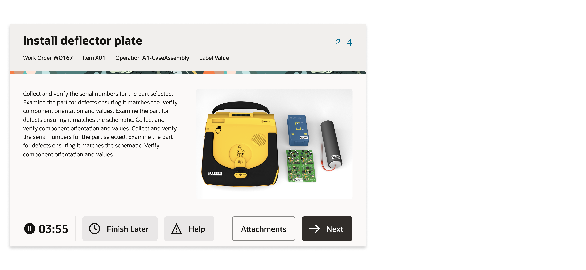
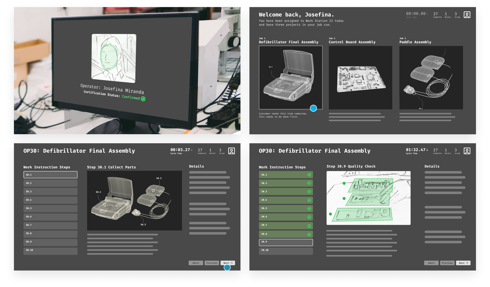
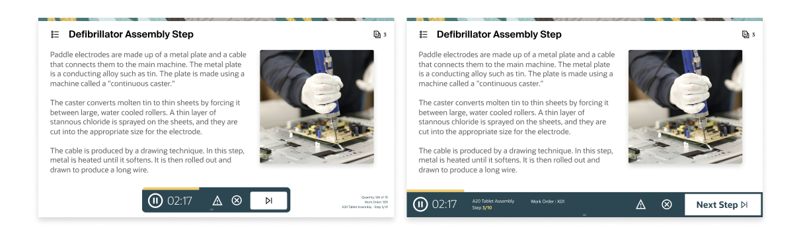
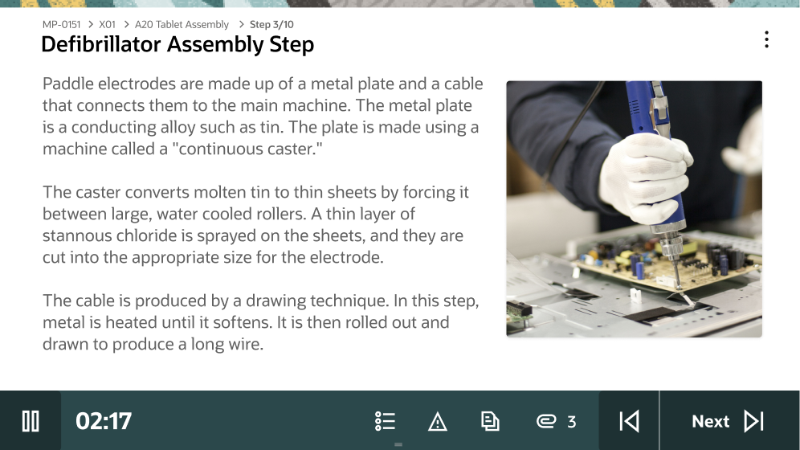
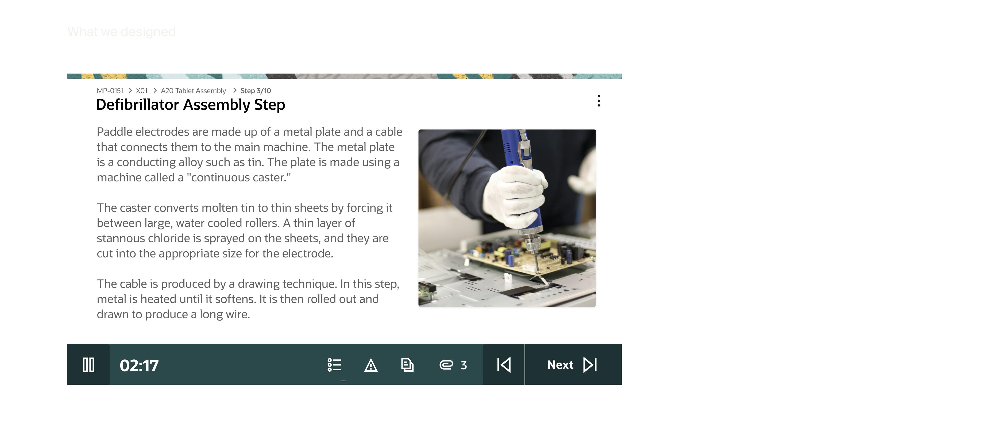
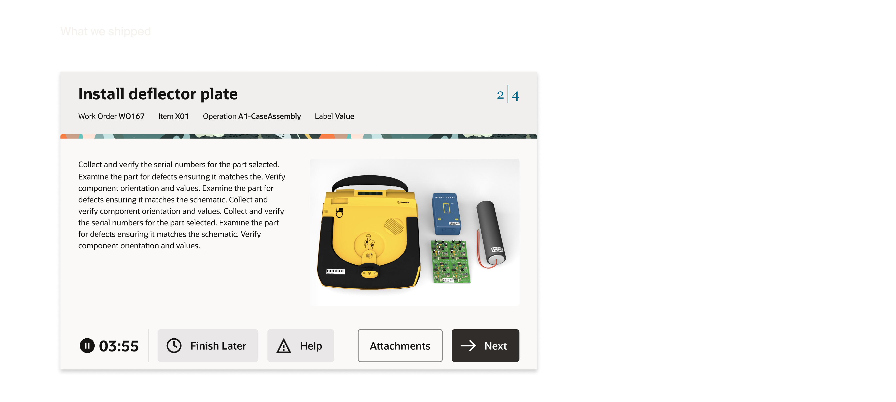

Project Overview
Background
Production Operators don't have the luxury of precise input or time to navigate complex interfaces. In 2023, Oracle's Supply Chain Manufacturing team needed a product for this environment and existing solutions couldn't meet the requirements. This project defined what was possible within the Redwood Design System and set a new bar for how Oracle builds for the factory floor.
My Role
I owned design from wireframe to high fidelity. Starting with an audit of the existing Redwood page templates, I documented what was available, evaluated whether it could meet the product requirements, and determined that a custom approach was necessary.
From there I was responsible for translating the wireframes and business goals into high fidelity design within the Redwood Design System. This work eventually led to me being embedded directly with the Platform team to develop my designs as a net new Redwood template, setting a new standard for how Oracle builds for the factory floor.
Challenge
Transform a concept demo into a shippable product built for one of the most demanding user environments in enterprise software, the factory floor.
As the designer my goal was to accommodate the following:
- Design for PPE-encumbered operators
- Align stakeholders to define shippable scope
- Identify the implementation strategy Custom, Redwood templates, or a hybrid approach
- Reduce steps to task completion
What we delivered
The Production Operator Kiosk shipped and is live on factory floors. What started as a proof of concept built to communicate a vision became a real product, built within Oracle's Redwood Design System and deployed into active production environments.
The only component without a prior pattern made it through. The Toolbar, focused to its essential function, captured the core of what we set out to build.


Where we started
Proof of Concept

What the process looked like
Audited the existing landscape
Defined the Kiosk paradigmModeled the Operator interactions
Validated with stakeholdersBuilt high-fidelity
Shipped to Platform teamPhase 1 – Research and Definition
We needed to know if Oracle's Redwood Design System could support a kiosk interface before committing to a custom build. I audited every available page template, mapped them against the proposed demo, and documented where they aligned and where they fell short. Nothing worked as-is but the audit surfaced reusable patterns that would reduce the scope of net-new work. The team aligned on a full custom route and engineering committed resources to support it.
AuditAudited Redwood templates against the demo to find reusable patterns before design began.
Before any design decisions could be made, we needed to understand what already existed. I conducted a full audit of the available Redwood page templates documenting each one and cataloging the patterns they included. As we built our comparison matrix we began mapping them against the proposed demo to identify where they aligned and where they fell short.
This research helped us not only identify what was available, but what could be altered to fit our needs. Even in a custom build scenario, identifying viable starting points within Redwood meant we weren't starting from zero on every page, reducing the scope of net new work and giving engineering a faster path to implementation.
- Can any existing Redwood templates be used as-is?
- Where existing templates fall short, are there patterns we can use as a starting point for custom development?
- If custom development is required, what is the most viable path forward?
AnalysisEvaluated each template against the wireframes, cataloging viable patterns and surfacing the critical gaps.
With the audit complete, we evaluated each template against the wireframes and documented our findings. For every template we captured what worked, what didn't, and why. Nothing was a direct match, but not everything was dismissed either. Viable patterns were cataloged as candidates for the custom build phase, giving us a library of starting points rather than a blank canvas.
- Though nothing in the Redwood Design System could be used as-is, the audit surfaced a strong foundation of patterns to leverage as we began designing new solutions.
- The most significant gap identified at this stage was that no existing control surface could deliver the functionality the product required.
AlignmentAligned design and engineering on a full custom build, securing the resourcing required to see it through.
Committing to a custom build wasn't just a design decision, it was a resourcing commitment. The audit and analysis made clear that neither native Redwood templates nor a hybrid approach could meet the product requirements, but moving forward meant getting engineering to the table and aligned on scope.
Design and development reviewed the findings together, agreed on the path, and committed the resources to see it through. From this point forward, the project had full cross-functional backing, not just design conviction.
Phase 2 – Interaction Modeling
With no existing pattern to build from, we developed four distinct interaction models, each representing a different philosophy for solving the Operator's constraints. MiniFlex was selected: it met core operator needs while limiting net new work, freeing the team to focus on the one component that had no precedent.
Gloved hands; no precision touch.
Interactions measured in seconds, not minutes.
Active production floor, divided attention.
Errors affect downstream production.
ResetStripped everything down to its core to explore interaction models without the constraints of fidelity.
With no existing pattern to build from we returned to basics. Rather than forcing fidelity too early, we stripped everything back to gray boxes and began broadly drawing interaction models that could satisfy the product requirements. Each model was shaped by the original demo as a reference point, the constraints we were designing within, and the design sensibility of the team.
- How does an operator move through a work order?
- What does the primary interaction model look like?
- What does the screen need to surface at any given moment, and what can be secondary?
- How do we honor the demo's vision while designing for the constraints the demo ignored?
- What interaction patterns have our customers already responded to that we can draw from?
ExplorationDeveloped four distinct interaction models, each representing a different philosophy for how operators would move through a work order.
Four interaction models were developed, each representing a distinct philosophy for how the product should behave. Each model was a different answer to the same question, what does this operator actually need in front of them, and what gets in the way?

ValidationEvaluated each model with internal proxies to balance operator needs and scope.
Validation was conducted with the closest proxies to factory floor operators we had: our VP of Design and the Strategy PM who served as the customer proxy, both with direct knowledge of the user base and operator preferences. Each model was evaluated against what operators would actually respond to, what would create friction, and what aligned with the constraints of the environment.
MiniFlex was selected. It met the core needs of the operator while leaning on enough existing patterns to limit the scope of net new work, freeing the team to concentrate resources on the one component that had no precedent: the toolbar.
Phase 3 – High Fidelity
Five core components were identified across all interaction models. Most had close Redwood equivalents to adapt from. One did not. The toolbar, the operator's primary control surface, was designed from first principles. Inspired by functional companions like the Dynamic Island and motorsport timing displays, it organized navigation, time tracking, and operator actions into a single container built for the edge of the experience. The designs were handed off to the Platform team and developed into a net new Redwood page template.
AdaptationMapped five core components to their closest Redwood equivalents, isolating the toolbar as the one piece with no precedent.
Across all four models, certain elements were consistent, things every operator would need regardless of which interaction model we pursued. We landed on five core components: the Page Header, Multi-Page Navigation, Single-Page Navigation, Action Buttons, and Auxiliary Content such as safety instructions, quality documentation, and attachments. With requirements defined, we began matching components to their closest Redwood equivalents. Some were quick wins like the Headers, Action Buttons, and Auxiliary Content as each had close enough existing patterns to adapt efficiently. Others required significantly more work. Multi-Page Navigation needed iteration and Action Buttons (which evolved in scope and complexity throughout the process) ultimately became the toolbar, the one component the design system couldn't provide a starting point for.
- Which of these components already exist in our design system, and how close are they to what we need?
- For every component we alter, is the enhancement worth the backlog cost?
- Where do we spend our design effort?
InnovationDesigned the toolbar from first principles.
Throughout exploration and adaptation, one problem remained unsolved. The bottom of the screen had accumulated a growing set of functions (step navigation, time tracking, attachments, actions) but no arrangement efficiently contained them. Existing patterns couldn't organize the complexity, and time tracking data had no clear home.
The inspiration came from outside enterprise software entirely. The Dynamic Island, a functional companion that adapts to what you're doing as you do it. Motorsport timing displays, real-time metrics that communicate critical information at a glance without demanding attention. Both pointed us toward the same idea: a container that lives at the edge of the experience, surfaces what matters, and stays out of the way.
We imagined it as one UX model with two configurations: a static position for standard deployments, and a dynamic, repositionable version that could be moved freely around the screen to accommodate the variability of factory floor workstations. After several rounds of iteration, the solution organized the full set of operator actions, established a clear hierarchy of importance, and presented everything needed without requiring operators to hunt for it.
Questions- How do we design for workstation variability across different factory environments?
- What does a functional companion look like on a factory floor?
- How do we organize a growing set of functions without overwhelming the operator?

The toolbar served as the operator's primary control surface. It gave operators affordances to advance through the required steps of a work order, tracked time at each step with pause and resume functionality, and housed the actions operators relied on most: viewing step details, accessing attachments, calling for assistance, and triggering the Andon light.
The most deliberate interaction decision was making it freely repositionable. Factory floors aren't uniform and workstations vary, sight lines differ, and what works at one station creates friction at another. Rather than fixing the toolbar to a position, operators could drag and place it anywhere on the screen, orienting it to their specific setup. No existing pattern covered what this component needed to do. The function, visual design, and interaction model were designed from first principles. However, this surfaced the projects defining tension:
Key Decisions — The ToolbarThe repositionable toolbar, an interaction decision most directly tied to the realities of the factory floor, was cut from the project scope.
While customers had responded favorably to it, the stakeholders deemed the implementation complexity too heavy to include with the build scope.
The toolbar shipped with a fixed position and the repositioning logic was documented and added to the backlog.

HandoffHanded off a fully resolved design direction to the Platform team, who developed it into a net new Redwood page template.
With the design validated and signed off across product, engineering, and strategy, our role as the SCM design team was complete. The Platform team, the group responsible for the Redwood Design System, developed our designs into a net new page template. What started as a custom solution for one product became part of the system itself.


Team
- Jennifer DarmourSVP
- Mark PearsonSenior Director
- Travis CantrellUX Designer
- Rashmi MohantyProject Manager
- Elaine WanStrategy